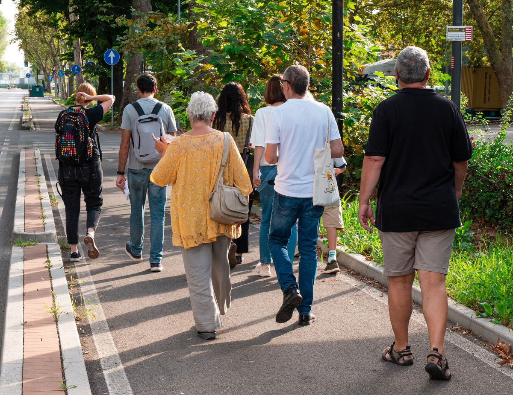
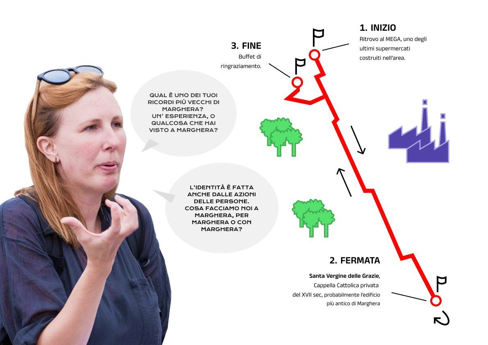
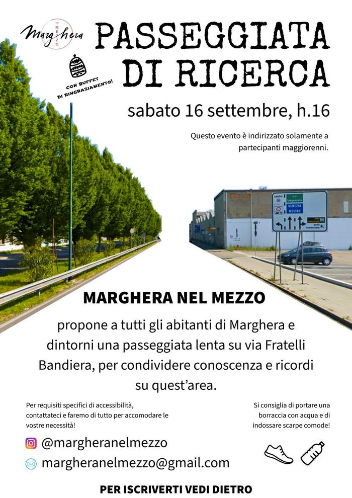
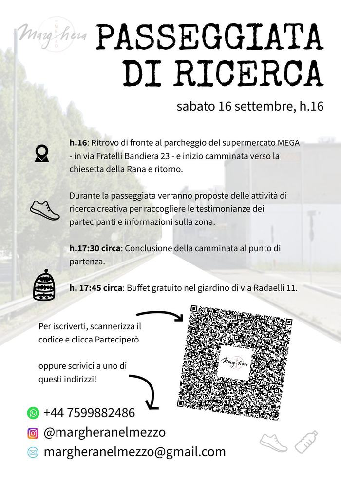

Progetto
Marghera, raccontata insieme
Marghera nel Mezzo
Un esperimento di ricerca partecipativa e co-design che vuole esplorare, raccontare e valorizzare le identità sociali, culturali e urbane del quartiere di Marghera.
È un percorso aperto e collettivo: abitanti, artisti, ricercatori e realtà del territorio insieme, per ascoltare, raccogliere memorie e immaginare il futuro.

Perché “nel mezzo”
Perché sta tra gli estremi e gli stereotipi, come luogo d’incontro tra generazioni, culture, memorie e futuri possibili. Un esperimento collettivo di narrazione urbana, dove l’arte aiuta ad abitare il presente e a progettare insieme il futuro del quartiere.Leggi la ricerca →
Come abbiamo lavorato
Un questionario e una serie di attività partecipative per far emergere le storie, i vissuti, i desideri e le criticità che abitano Marghera oggi.
- risposte al questionario
- 128
- interviste
- 3
- passeggiate di ricerca
- 2
- mappature collettive
- 6
- 01 Questionario Il passo che ha coinvolto più persone: 128 risposte a domande come “C’è un luogo in cui ti senti parte della comunità di Marghera?” e “C’è un posto a Marghera in cui non sei mai andato ma che vorresti visitare?” Guarda su Instagram (si apre in una nuova scheda)
- 02 Interviste Con Laura Boato, StorieStorte e ViviAmo Marghera: da queste conversazioni sono emerse le prime dualità, come memoria e speranza, iniziative dall’alto e dal basso. Guarda su Instagram (si apre in una nuova scheda)
- 03 Passeggiate di ricerca Da via Fratelli Bandiera alla chiesetta della Rana e ritorno, lungo il confine tra industria e residenza: attività partecipative per raccogliere testimonianze, poi un buffet in giardino. Guarda su Instagram (si apre in una nuova scheda)
- 04 Mappature collettive Dai temi e luoghi più citati nel questionario, residenti, expat ed esperti di comunità hanno creato le coppie luogo–tema per i portali. Guarda su Instagram (si apre in una nuova scheda)



Perché una galleria
Durante le passeggiate di ricerca ci siamo accorti che Marghera cambia nel tempo, ma anche a seconda di chi la guarda. Per questo è importante condividere ricordi e sguardi sul quartiere: perché Marghera non sia raccontata solo da chi non la vive, spesso attraverso stereotipi.
Così è nata l’idea di una galleria d’arte comunitaria, aperta a tutti, per raccontare Marghera insieme come abbiamo fatto camminando: qui puoi guardare foto, video, musica, testi e disegni di chi abita il quartiere, e aggiungere i tuoi.
Guarda la galleria →